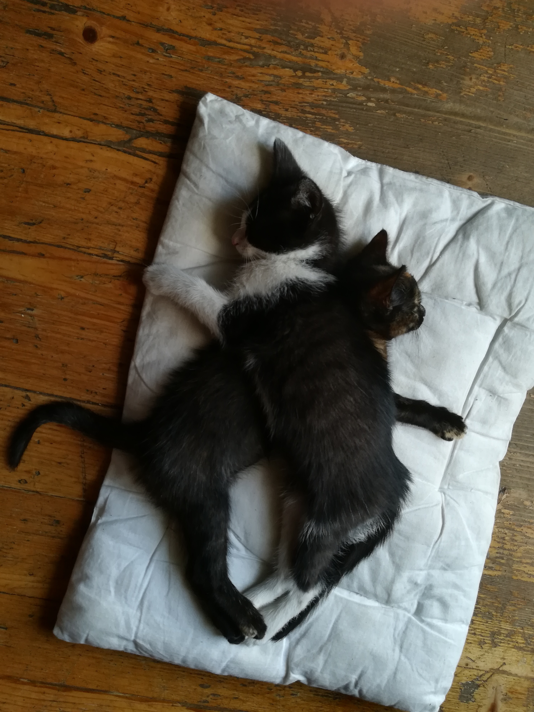

Hejo! Tu Despacito tworze tą strone i tyle musicie wiedzieć!
No wiec, powiem troche wiecej lubię koty.
Sam mam dwa, maluchy już mają pół roku!
Mają na imię Bety i Tomy!
Biało-czarny to Tomy, Czarno-brązowa to Bety!
Kliknij na zdjęcie, aby oglądnąć film z spiewającymi kotami!
Wolfychu Boom x4, coś dla rozluźnienia